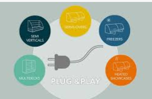

K systémovému software můžeme kromě operačních systémů zařadit ovladače hardarových zařízení, firmware a
aspoň zčásti i tzv. utility
Ovladače zařízení
Speciální programy, které zajišťují komunikaci OS s určitým technickým
vybavením. Bez potřebného ovladače nemůže zařízení správně fungovat. Standardní ovladače pro běžná
zařízení,
jakými jsou flash disk, myš, klávesnice nebo digitální fotoaparáty, bývají součástí moderních OS.
Instalaci
zařízení ve Windows usnadňuje standard Plug and Play (PnP - „připoj a hrej“), který zajistí
automatickou
detekci nově připojeného hardware a případně i automatické vyhledání potřebného ovladače. Neníli driver
nalezen přímo v OS, musí být použit externí instalátor ovladače z disku dodaného se zařízením (např. z
instalačního CD k tiskárně), nebo stažený z internetových stránek, nejlépe přímo od výrobce. Nevhodně
zvolený ovladač může v krajním případě způsobit nefunkčnost zařízení, někdy i celého OS

Technologie Play and Play
Firmware
Programové vybavení, které slouží pro řízení nějakého vestavěného
systému. Firmware řídí
například kalkulačky, počítačové komponenty (pevný disk, router...), mobilní telefon, digitální
fotoaparát
atd. Dříve byla aktualizace firmwaru realizována nahrazením paměťového média obsahujícího firmware
(např.
výměna ROM paměti), dnes může být novější verze firmware přepsána díky používaným flash pamětem.
Základním
firmwarem v počítači je BIOS, který zajišťuje
především start počítače a
umožňuje konfiguraci základní desky i připojeného hardware
Utility
Jsou menší pomocné programy, které umožňují vykonávat servisní operace potřebné k fungování počítače.
Patří k nim komprimační programy, diagnostické a testovací programy, utility pro kontrolu a optimalizaci
operačního systému, různé konverzní (převodní) programy, které umí přehledně zobrazit obrázky, převést
je z jednoho formátu na jiný atd. Řada utilit je integrální součástí OS. Příkladem může být Správce úloh
ve Windows, který umožňuje nejen správu spuštěných programů a služeb, ale i sledování
využití systémových zdrojů (procesoru, paměti). Dalšími užitečnými utilitami jsou nástroje pro
defragmentaci (defrag) nebo kontrolu disku (chkdsk). Některé utility lze spouštět z příkazového řádku
(ping, ipconfig apod.).